図解：第二未来派
未来派から第二未来派へ
- 18〜19世紀
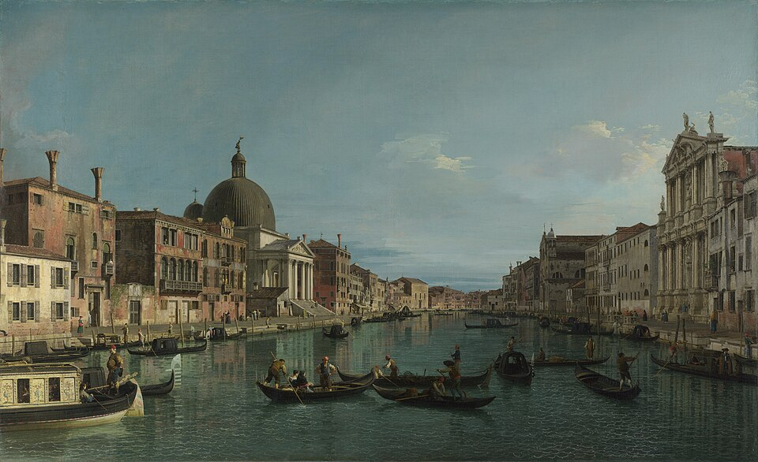
遅れたイタリア過去の遺産を外国人へ売る
工業化は半世紀ほど遅れる - 1909〜18
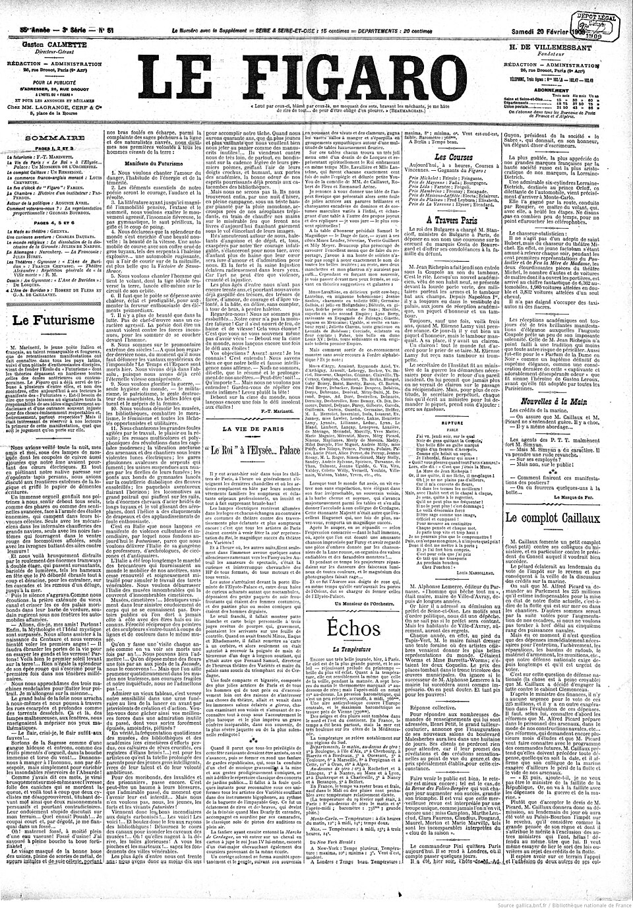
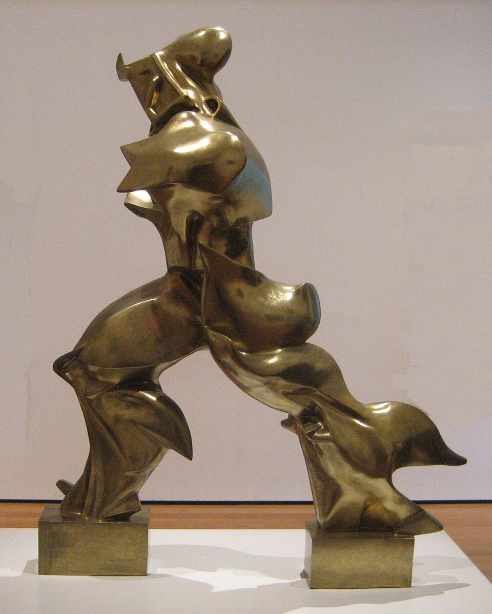
初期未来派マリネッティが宣言を発表
彫刻・音楽・建築へ展開 - 1919〜
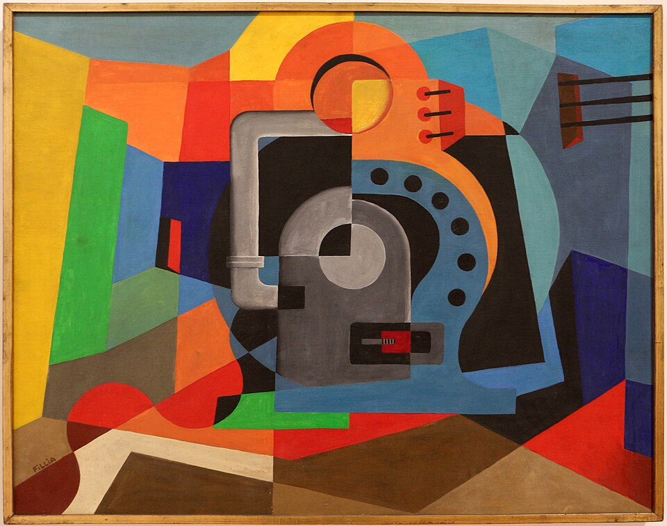
ファシズムと接近公式の芸術ではないが深い関係
生活・デザイン・国際交流へ - 1929〜30年代
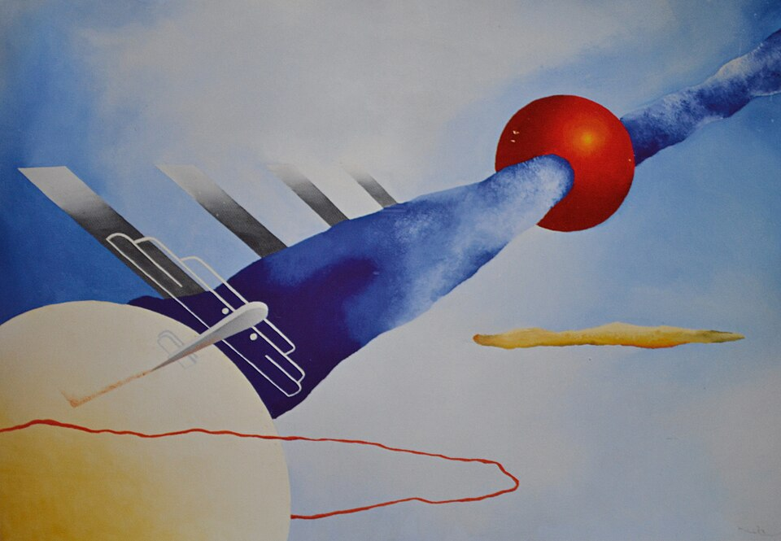
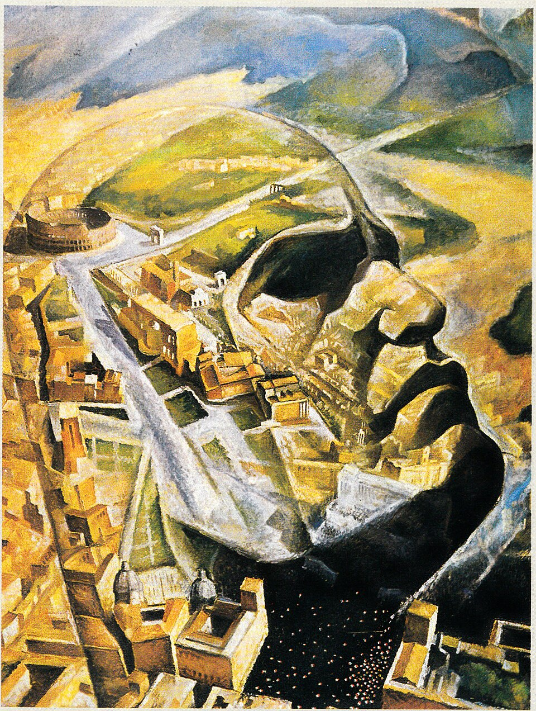
航空絵画空からの眺めを絵画にする
政権の宣伝とも結び付く
初期未来派と何が違うか
モーターボート・飛行宣言芸術のあり方を説く政治・生活の変革も主張
脱バチカン化・料理宣言表現激しさ・速さ穏やかで流動的な表現も
ベネデッタ・カッパ戦後の評価主に語られてきた過小評価、のち再評価
1958年クリスポルティが命名
図版の出典
- 《ヴェネツィア、サン・シメオーネ・ピッコロのある大運河上流》カナレット：出典（Public domain / PD-Art / PDM）
- 《『フィガロ』1909年2月20日号第1面》フィガロ編集部（宣言執筆：フィリッポ・トンマーゾ・マリネッティ）：出典（Public domain / PD-Art / PDM）
- 《空間における連続性の唯一の形態》ウンベルト・ボッチョーニ：出典（Public domain（彫刻PD-old、写真WmpearlによるPD-self））
- 《機械の偶像》フィリア（ルイージ・コロンボ）：出典（CC BY-SA 4.0（写真、原作品PD））
- 《航空の神秘》フィリア（ルイージ・コロンボ）：出典（Public domain / PD-Art / PDM）
- 《飛行士ムッソリーニの航空肖像》アルフレード・ガウロ・アンブロージ：出典（Public domain（PD-Italy／PD-1996、原作者1945年没））
重要人物
創始者と初期未来派
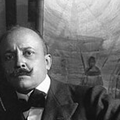
フィリッポ・トンマーゾ・マリネッティ詩人1909年に未来派宣言。料理宣言も出し1944年に死去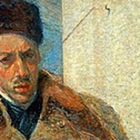
ボッチョーニ画家・彫刻家優れた才能を示すが、戦争の影響で死去- サンテリア建築家初期の建築家。戦争の影響で死去
- ジーノ・セヴェリーニ画家大戦を生き残り、古典的な作風へ転じる
第二未来派の芸術家
- ベネデッタ・カッパ＝マリネッティ画家珍しい女性の画家。穏やかで流動的な表現
- フォルトゥナート・デペロ画家・デザイナーカンパリの広告、ボルトで留めた本をデザイン
- ジェラルド・ドットーリ画家《速度の三連作：出発》を上からの視点で描く
- エンリコ・プランポリーニ画家雑誌『ノイ』を作り、国外へ発信
- フィリア画家機械の神聖化を描く。宗教芸術宣言の中心
- アルフレード・アンブロージ画家1931年から参加。政治と結び付く傾向が強い
- トゥリオ・クラーリ画家兵士の視点で空を描く。晩年まで航空絵画を続ける
政治と評価
初期未来派とその背景
初期未来派から第二未来派へ
動画 0:52～第二未来派は、第一次世界大戦後、主に1920年代以降のイタリアで展開された未来派の活動を指します。初期の運動を受け継ぎながら、速さの表現だけでなく、新しい機械を使う体験、デザイン、空からの眺めなどへ領域を広げました。この呼び名は当時の自称ではなく、後に研究者が用いたものです。その展開を理解するため、まず初期未来派と、イタリアの置かれた状況を見ていきます。
過去の遺産の国と遅れた工業化
動画 1:25～ルネサンスのイタリアは、芸術の先進地域でした。地中海交易の中心にあり、商人を中心とする市民の力が強まったこと、カトリックの総本山ローマがあり、教皇の影響力が大きかったことが背景にあります。メディチ家などの富裕層や教皇が芸術家を支えました。しかし大航海時代には、東方との交易で地中海を通る必要が減り、科学の発展でキリスト教の影響力も相対的に弱まります。芸術を支えた基盤が変わっていったのです。
一方、フランスでは絶対王政、イギリスでは議会制が発展し、安定した政治基盤が作られました。ルイ14世は積極的な芸術政策を進め、フランスの美術文化の基盤を築きます。イタリアは芸術の中心の座を譲りました。18世紀、イギリスの上流階級の若者はグランド・ツアーでイタリアへ学びに来ましたが、関心は当時の新しい芸術より、ルネサンスの美術や古典文化にありました。
その需要に応え、遺跡や町並みを描いて旅行者へ売る画家もいました。カナレットの作品が国内より国外に多く所蔵されるのも、外国人の買い手へ向けて描いたためです。新しい芸術を発展させる余裕が乏しく、過去の遺産で自らの存在を保つような状況でした。

《ヴェネツィア、サン・シメオーネ・ピッコロのある大運河上流》
- 作者
- カナレット
- 制作時期
- 1740年頃
- 所在地・所蔵
- ナショナル・ギャラリー、ロンドン（NG163）
- 素材・形式
- 油彩・カンヴァス
- 原題
- Venice: The Upper Reaches of the Grand Canal with S. Simeone Piccolo
出典・画像について
統一へ向かったのは1860年代になってからです。イギリスやフランスは18世紀後半から19世紀前半に産業革命を進めていましたが、イタリアでは統一が契機となり、少なくとも半世紀ほどの差が生じていました。しかも工業化は主に北部に集中し、農業中心の南部との格差が広がります。1880年代から1910年代には、南部を中心に数百万人規模の人々が国外へ移住しました。出稼ぎに出た働き盛りの成人が戻らないこともあったとされます。列強へ追い付こうにも、植民地政策の重要拠点もすでに他国に押さえられていました。
伝統を捨て、新しい未来へ
動画 4:10～工業化に遅れたイタリアで生まれたのが、若い芸術家たちによる未来派です。1909年、詩人フィリッポ・トンマーゾ・マリネッティが、フランスの全国紙『フィガロ』に発表した未来派宣言が起点となりました。過去の伝統と決別し、技術の発展と戦争を賛美し、女性蔑視も掲げる、過激な宣言です。ただし、国家間の戦争を本当に望んだのか、それとも古い価値観との闘争を意味したのかには、解釈の余地があるともされています。

《『フィガロ』1909年2月20日号第1面》
- 作者
- フィガロ編集部（宣言執筆：フィリッポ・トンマーゾ・マリネッティ）
- 制作時期
- 1909年2月20日
- 所在地・所蔵
- フランス国立図書館、Gallica（bpt6k2883730）
- 素材・形式
- 新聞印刷・デジタル複製
- 原題
- Le Figaro, 20 février 1909, numéro 51, page 1
- 動画の年代
- 1909年
出典・画像について
1909年2月20日第1面の原資料。動画の黄色い強調は加えていません。動画の年代表記：1909年。
画像出典：Titre :
Figaro : journal non politique
Éditeur :
Figaro (Paris)
Date d'édition :
1909-02-20
Contributeur :
Villemessant, Jean Hippolyte Auguste Delaunay de (1810-1879). Directeur de publication
Contributeur :
Jouvin, Benoît. Directeur de publication
Type :
texte
Type :
publication en série imprimée
Langue :
Français
Langue :
language.label.français
Format :
application/pdf
Format :
Nombre total de vues : 164718
Description :
1909/02/20 (Numéro 51).
Description :
Appartient à l’ensemble documentaire : Pam1
Droits :
domaine public
Identifiant :
ark:/12148/bpt6k2883730
Source :
Bibliothèque nationale de France
Relation :
http://catalogue.bnf.fr/ark:/12148/cb34355551z
Relation :
http://gallica.bnf.fr/ark:/12148/cb34355551z/date
Provenance :
Bibliothèque nationale de France
Date de mise en ligne :
15/10/2007
Public domain / PD-Art / PDM
作品情報：作品・画像・利用条件 · 所蔵館の作品ページ
先に産業革命を経験したイギリスやフランスでは、機械の発展によって伝統的な手工芸が追いやられました。機械による粗悪な製品ではなく、手で作るよいものを広めようとして、イギリスではアーツ・アンド・クラフツ運動が起こり、フランスを中心にアール・ヌーヴォーが発展します。イタリアは逆に、伝統へ戻るのでなく、それを切り捨てて機械の発展へ進もうとしました。同じ産業化への反応でも、置かれた状況によって方向が異なりました。
速度と運動を美として表す
動画 5:28～マリネッティの思想に賛同した芸術家たちも、自ら宣言を発表し、古い価値観に反発しました。新しい美は、速度の美です。人や機械が騒音を立てて動き、機械や都市が示す運動、力強い変化を称えました。従来の静かな美とは、反対の方向です。
当時の先端的な写真技術にも注目し、複数の動きを一枚に重ねる表現を試みました。ピカソやブラックのキュビスムの技法を、異なる時間を重ね合わせることへ生かしたのです。先端技術と新しい技法を組み合わせて、新たな芸術を示そうとしました。
絵画を越える活動と大戦
動画 6:22～活動は彫刻、音楽、建築にも及びました。彫刻では複数の時間を一つの形に重ね、音楽では騒音を鳴らす機械イントナルモーリを発明し、建築では高層ビルの並ぶ新しい都市を構想します。伝統から離れた価値観を、広く示そうとしたのです。

《空間における連続性の唯一の形態》
- 作者
- ウンベルト・ボッチョーニ
- 制作時期
- 1913年原型、1931年または1934年鋳造
- 所在地・所蔵
- ニューヨーク近代美術館（231.1948）
- 素材・形式
- ブロンズ
- 原題
- Forme uniche della continuità nello spazio
- 動画の年代
- 1913年
出典・画像について
原型は1913年。写真の個体は作者没後の1931年または1934年の鋳造品。動画の年代表記：1913年。
画像出典：Wmpearl
Public domain（彫刻PD-old、写真WmpearlによるPD-self）
作品情報：作品・画像・利用条件 · 所蔵館の作品ページ

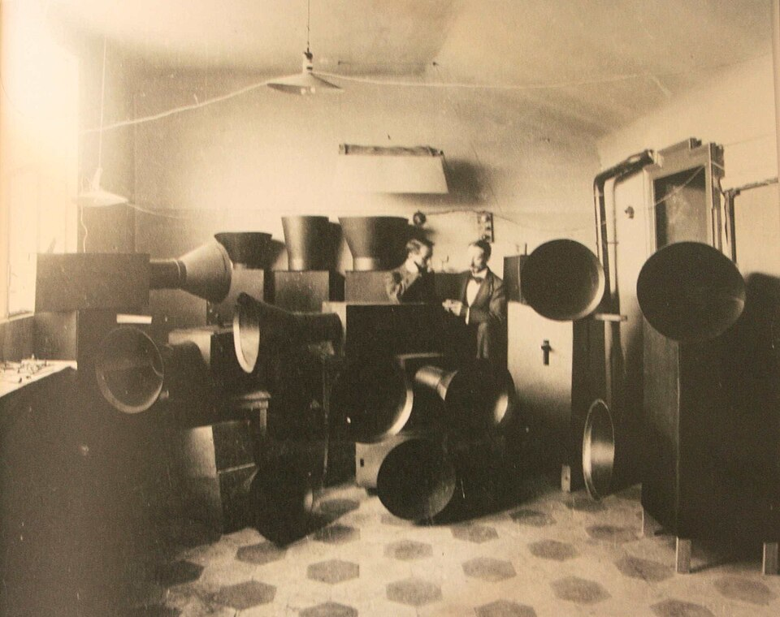
画像を拡大 ＋《ミラノの実験室におけるルッソロ、ピアッティとイントナルモーリ》
- 作者
- ルイジ・ルッソロ／ウーゴ・ピアッティ（制作）、撮影者不詳
- 制作時期
- 1913年
- 所在地・所蔵
- ミラノ（撮影地）、フランス国立図書館Gallica（掲載誌）
- 素材・形式
- 白黒写真
- 原題
- Luigi Russolo and assistant Ugo Piatti in their Milan studio with Intonarumori
出典・画像について
動画の2枚のうち上段と対応する記録写真。現代の復元楽器の写真ではありません。
画像出典：楽器制作：ルイジ・ルッソロ／ウーゴ・ピアッティ。写真撮影者不詳（Commons作者欄はルッソロに帰属）
Public domain / PD-Art / PDM
作品情報：作品・画像・利用条件

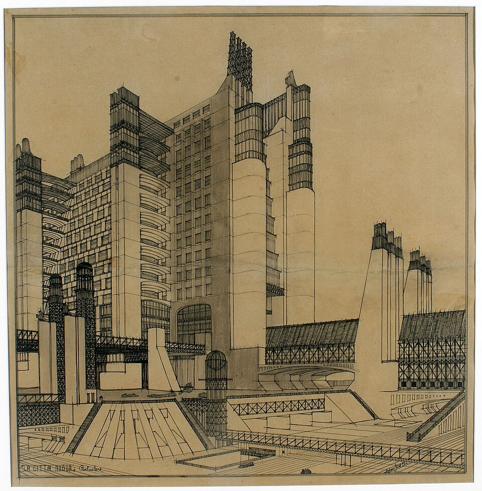
画像を拡大 ＋《新都市・部分図》
- 作者
- アントニオ・サンテリア
- 制作時期
- 1914年
- 所在地・所蔵
- サンテリア家個人蔵
- 素材・形式
- 紙に黒鉛筆・インク
- 原題
- La Città Nuova. Particolare
出典・画像について
1914年に第一次世界大戦が始まり、当初中立だったイタリアも、遅れて連合国側へ参戦しました。未来派は、劇場でオーストリア国旗を破いたり、反中立を掲げる服装をデザインしたりして、参戦をあおったとされます。やがて画家や彫刻家として優れた才能を示したボッチョーニ、建築家サンテリアらが戦争の影響で亡くなりました。生き残ったジーノ・セヴェリーニも未来派から距離を置き、古典的な作風へ転じるなど、戦争は価値観を大きく変えます。
各資料の版・年・原作と画像の条件未確定。1958没原作の米国PD/写真条件だけで許可としない。
《反中立の衣服デザインと『反中立の服装』宣言》
- 作者
- ジャコモ・バッラ
- 制作時期
- 1914年（関連宣言）
- 所在地・所蔵
- 原資料・所蔵先未確定
- 素材・形式
- 衣服デザイン図・宣言印刷物
- 原題
- Il vestito antineutrale
出典・画像について
入力パンパン踊り1911を訂正。同名個体・条件未確認、別の踊り子画を代用しない。
《ダンサーのダイナミズム（画面表記）》
- 作者
- ジーノ・セヴェリーニ
- 制作時期
- 1912年（画面表記）
- 所在地・所蔵
- 未確定
- 素材・形式
出典・画像について
同名個体と1966没原作・画像条件が揃わず保留。
《母性》
- 作者
- ジーノ・セヴェリーニ
- 制作時期
- 1916年（画面表記）
- 所在地・所蔵
- 掲載個体の所蔵先未確定
- 素材・形式
- 原題
- Maternità
出典・画像について
戦後社会と政治、生活の変革
勝利しても残った不満
動画 7:59～1915年に参戦したイタリアは戦勝国になりましたが、戦後の講和では、参戦前に約束されたとおりの領土を得られませんでした。アメリカ大統領ウッドロウ・ウィルソンが十四か条の平和原則を提唱し、国家や政府間の取引より、その土地に住む人々の意思を尊重する考え方が示されたためです。
多くの犠牲と資源を費やしたイタリアには、期待した成果が得られない不満が残りました。国内ではこの勝利を「ヴィットーリア・ムティラータ」、傷ついた勝利と呼びました。戦時の軍事支出の影響でインフレが激しく進み、失業も急増します。1919年から1920年の「赤い二年間」には、農民や労働者が武装蜂起や千件以上に及ぶとされるストライキを起こしました。
混乱から強い指導者を求める社会へ
動画 9:05～怒りや不満は共通していても、その後どうするかという思想や方針は統一されていませんでした。分断された社会で強い指導者を求める声が高まり、話し合いを要する議会政治の対応が後手に回ることへの疑問もくすぶります。ここに登場したのがベニート・ムッソリーニで、1919年にファシストの前身、戦闘ファッシを結成しました。
ファッショはイタリア語で束を意味し、国家の結束に対して個人をその一本として捉えます。国家を何より重んじ、国民より優先する思想です。その方向へ従わない人や異なる意見を、暴力で排除しました。黒シャツ隊という武装勢力が反対派を抑え込み、ストライキの鎮圧にも大きな役割を果たします。
この強引な方法は、経営者や地主から歓迎されました。ストライキをすれば身の危険があるという認識が広がり、政府も事実上黙認するような状態でした。暴力で社会の混乱を抑える姿勢が、支持の獲得につながったのです。
未来派とファシズムの関係
動画 10:41～戦争や暴力を肯定する言葉を用いてきた未来派と、ファシズムには親和性がありました。マリネッティは戦後も活動を続け、1919年にはアルチェステ・デ・アンブリスと共同でファシスト宣言を執筆しました。初期のファシスト運動の政治的な立場を示すものです。
ただし、政権が未来派を公式の芸術と定めたわけではありません。多くの思想を共有して深い関係を持ち、ムッソリーニ支持の宣伝的な作品を描く画家も現れました。未来派には、創始者やその思想を受けた人々が、さまざまな宣言を出す特徴があります。未来派宣言、未来派画家宣言、音楽や建築などの宣言は、主に芸術はいかにあるべきかを説くものでした。しかしファシズムの台頭に伴い、第二未来派では芸術の枠を越え、政治など広い分野へ変革を求める主張も目立つようになりました。

《飛行士ムッソリーニの航空肖像》
- 作者
- アルフレード・ガウロ・アンブロージ
- 制作時期
- 1930年
- 所在地・所蔵
- 個人蔵
- 素材・形式
- 絵画
- 原題
- Aeroritratto di Mussolini aviatore
出典・画像について
生活へ広がる宣言と政権との距離
動画 12:08～「脱バチカン化：イタリア人への宣言」は、教会や教皇を批判し、国家との政治的な関係を解消すべきだとするものです。マリネッティ本人でなく、周辺の人物が書きました。未来派の名の下で、こうした政治的な主張が出てきた点が重要です。
マリネッティ自身は未来派料理宣言を発表しました。内容はイタリア人の食生活へ及び、視覚など五感を重んじる点には、芸術とのつながりも考えられます。とりわけパスタへ反対し、よくかまずに食べると胃が重くなり、軟弱な男性を生むと主張しました。教会への批判と同じく、伝統への反発が共通しています。一方、同年に彼自身がパスタを食べる姿を見られたという逸話もあります。
単なる挑発だけでなく、世界恐慌後の食料事情を背景に、輸入頼みの小麦から米などへ移ろうとする狙いもあったようです。イタリアでもリゾットなど米の料理は食べられていました。変革の対象が、芸術から広い生活の領域へ移っていたのです。
ファシズムの台頭は未来派の活動を後押ししましたが、未来派が自らの芸術を体制へ合わせて変えた、ということではありません。活動しやすくなった状況で、さまざまな分野へ進みました。例えば輸入小麦への依存を減らす問題でも、未来派が別の穀物への転換を考えたのに対し、ムッソリーニは国内の小麦生産を強める政策を採りました。関わりを持ちながらも、同じ歩調でなく、それぞれの目的で動き、前衛表現を貫こうとしていました。
新しい体験と多彩な表現
ベネデッタと新しい機械の体験
動画 15:12～第二未来派で重要なのは、ベネデッタ・カッパ、フォルトゥナート・デペロ、ジェラルド・ドットーリ、エンリコ・プランポリーニ、フィリアです。ベネデッタ・カッパ＝マリネッティは、この集団では珍しい女性の芸術家でした。ジャコモ・バッラに学び、1923年に創始者マリネッティと結婚します。
彼女の穏やかで流動的な表現は、激しさや速さ、ダイナミックさを追ってきた初期の画家たちとは異なります。女性の視点から新しい表現を持ち込んだ、と捉えられます。第二未来派の関心は、速さの美そのものに加え、新しい機械や、それを用いる体験へと向かっていきました。
同定済みだが原作・画像条件未確認。生没年の資料差を不要に補わない。
《モーターボートの速度》
- 作者
- ベネデッタ・カッパ＝マリネッティ
- 制作時期
- 1919～1924年
- 所在地・所蔵
- ローマ市立近代美術館
- 素材・形式
- 原題
- Velocità di motoscafo
- 動画の年代
- 1922年
出典・画像について
動画の年代表記：1922年。
作品情報：作品・画像・利用条件 · 所蔵館の作品ページ
《モーターボートの速度》は、大戦後に民間のレース用として普及したモーターボートを主題とします。ドットーリの《速度の三連作：出発》も、両脇の観客、中央の発走を待つ車を、上から見る独特の視点で描きました。新しい技術を描くだけでなく、それまでとは違う体験を、見る人と共有することが特徴です。
入力具現化を訂正。出発部分の同一画像条件未確認で保留。
《速度の三連作：出発》
- 作者
- ジェラルド・ドットーリ
- 制作時期
- 1925～1927年
- 所在地・所蔵
- パラッツォ・デッラ・ペンナ市立美術館、ペルージャ
- 素材・形式
- 油彩・カンヴァス
- 原題
- Trittico della Velocità – Il via
- 動画の年代
- 1927年
出典・画像について
動画の年代表記：1927年。
国外の芸術と交流する
動画 16:38～プランポリーニやフィリアは、国際的な影響も取り入れました。理想的な景観や機械の神聖化という主題は未来派的ですが、表現にはフランスのキュビスム、フアン・グリスやフェルナン・レジェとの類似が見られます。実際にキュビスムやバウハウスなど、国外の芸術家と交流した影響でした。
現所蔵と条件未確定。作家1894–1956、画面1952没は不整合なので転記しない。https://www.christies.com/lot/enrico-prampolini-1894-1956-forme-architettoniche-di-paesaggio-4629126/
《未来派の理想風景の建築的形態》
- 作者
- エンリコ・プランポリーニ
- 制作時期
- 1921年頃
- 所在地・所蔵
- 現所蔵先未確認（Christie’s出品記録あり）
- 素材・形式
- 原題
- Forme architettoniche di paesaggio futurista ideale
- 動画の年代
- 1921年
出典・画像について
動画の年代表記：1921年。

《機械の偶像》
- 作者
- フィリア（ルイージ・コロンボ）
- 制作時期
- 1925～1926年
- 所在地・所蔵
- 国立近代現代美術館、ローマ
- 素材・形式
- 油彩・カンヴァス
- 原題
- Idolo meccanico
- 動画の年代
- 1924～1925年
出典・画像について
原作と写真を分けて記録。Commonsのイタリア文化財の利用に関する注意書きも元メタデータへ保持。動画の年代表記：1924～1925年。
画像出典：Sailko
CC BY-SA 4.0（写真、原作品PD）
作品情報：作品・画像・利用条件
制作メモ
Sailko写真CC BY-SA4.0、原作者1936年没。
体制との関係から閉鎖的と思われがちですが、未来派は開かれた集団でした。プランポリーニは雑誌『ノイ』を作り、国外へ積極的に発信します。副題は「国際前衛芸術コレクション」で、イタリアの作品を写真で紹介するとともに、国外の著名な芸術家からも寄稿を受けました。ピカソやレジェなども関わり、家具デザインや彫刻まで、幅広く掲載しました。
10-11-12を月や1924と誤読しない。表紙原作と同じスキャン条件未確認。
《『Noi』第2シリーズ第10・11・12合併号表紙》
- 作者
- エンリコ・プランポリーニ（意匠）
- 制作時期
- 1925年
- 所在地・所蔵
- ローマ刊（スキャン個体所蔵未確定）
- 素材・形式
- 印刷図版・雑誌表紙
- 原題
- Noi: Rivista d’Arte Futurista, II serie, n. 10/11/12
出典・画像について
作品情報：作品・画像・利用条件 · 所蔵館の作品ページ
広告と本を変えるデペロ
動画 17:51～デペロは多彩な分野の中でも、デザインで革新性を示しました。イタリアのリキュール、カンパリの広告では、傘を逆さにして降る酒を飲むといった発想を、斬新な造形で表します。商業広告へ前衛芸術を取り込み、ポスターだけでなく、ブランドの印象全体を未来派的な造形感覚で作り直しました。
File:Se-la-pioggia-fosse-di-Bitter-Campari.pngは2025投稿者OwnworkCC BY-SA4だが1960没原作者許可なし、保留。
《もし雨がビター・カンパリだったら》
- 作者
- フォルトゥナート・デペロ
- 制作時期
- 1926年
- 所在地・所蔵
- 掲載個体の所蔵先未確定
- 素材・形式
- 広告図版
- 原題
- Se la pioggia fosse di Bitter Campari
出典・画像について
「ザ・ボルテッド・ブック」では、ページを糊でなくボルトで留めました。外せばページを取り出し、順番を変えられます。本を機械のように解体し、再構築できるデザインです。伝統への反発や機械の賛美を共有しながら、1920年代の画家たちは、速さだけから距離を置き、それぞれの表現を模索していました。
公式画像ARS/SIAE・複製申請で自由条件なし。原本/復刻/別展示写真で代用しない。
《デペロ・フトゥリスタ》
- 作者
- フォルトゥナート・デペロ
- 制作時期
- 1927年
- 所在地・所蔵
- ニューヨーク近代美術館（202.1997、動画撮影個体未確定）
- 素材・形式
- 図版入り書籍、活版印刷・線画版
- 原題
- Depero Futurista
出典・画像について
作品情報：作品・画像・利用条件 · 所蔵館の作品ページ
航空絵画と1930年代の活動
空からの眺めを絵画にする
動画 19:03～1929年、画家たちは未来派航空絵画宣言を出し、当時の先端技術だった航空機へ注目しました。地上からでなく上空から見下ろす感覚を、絵画にするのがアエロピットゥーラ、航空絵画です。同年10月に概念が公表され、マリネッティやベネデッタらが署名します。1930年代は、これを中心に発展しました。
空からの風景や飛ぶ航空機を描き、地上では得られない俯瞰の視点を表しました。機械文明への賛美を、飛行の体験を通じた視覚表現として示したのです。戦間期のイタリアでは航空技術が大きく向上し、飛行が社会の関心を集めていました。同じ1930年代、政権も航空力を国家の威信の象徴として宣伝し、大規模な編隊飛行で他国への技術的な優位を示そうとしました。ここから航空絵画も、宣伝との関係を強めます。
同一個体・所在地・素材・原作画像条件未確認。写真条件だけで原作許可としない。
《航空通信の統合（画面表記）》
- 作者
- ベネデッタ・カッパ
- 制作時期
- 1933～1934年（画面表記）
- 所在地・所蔵
- 掲載個体所在地未確定
- 素材・形式
出典・画像について
入力作者フィリアは誤り。1977没作家の同一個体と条件未確定、別航空風景で代用不可。
《オーロラ飛行（画面表記）》
- 作者
- ジェラルド・ドットーリ
- 制作時期
- 1933年（画面表記）
- 所在地・所蔵
- 未確定
- 素材・形式
出典・画像について

《航空の神秘》
- 作者
- フィリア（ルイージ・コロンボ）
- 制作時期
- 1930～1931年
- 所在地・所蔵
- ジャンニ・カプロニ航空博物館、トレント
- 素材・形式
- 水彩・テンペラ・紙
- 原題
- Mistero aereo
出典・画像について
後から加わった画家とクラーリの空
動画 20:30～1931年から加わったアルフレード・アンブロージ、1929年からのトゥリオ・クラーリは、後発の代表的な画家です。初期からの参加者より、政治と結び付く傾向が強く、軍用機の編隊や爆撃を扱う作品も描かれました。政治色や戦争の主題は評価しにくく、この時期の未来派芸術は十分に評価されない傾向もあります。一方で、描き手が新しい視点を届けたことも確かです。
公式競売で個体確認、自由画像条件未確認。https://www.cambiaste.com/uploads/auctions/759-cambi_contemporanea_667_2021_12_eb.pdf
《ニューヨーク上空の第2大西洋飛行隊》
- 作者
- アルフレード・ガウロ・アンブロージ
- 制作時期
- 1933年
- 所在地・所蔵
- 2021年競売時は個人蔵、ボローニャ。現所蔵未確認
- 素材・形式
- 油彩・板
- 原題
- Seconda squadra atlantica su New York
出典・画像について
1941–1942へ推測訂正しない。同一個体と年代・原作画像条件が揃わず保留。
《アレクサンドリアへの空襲（画面表記）》
- 作者
- トゥリオ・クラーリ
- 制作時期
- 不明
- 所在地・所蔵
- 未確定
- 素材・形式
- 動画の年代
- 1914～1942年（画面表記、誤記の可能性）
出典・画像について
画面は1914～1942年と読めますが年代に疑義があるため、不明とし、推測して1941～1942年へ直していません。動画の年代表記：1914～1942年（画面表記、誤記の可能性）。
クラーリの《パラシュートが開く直前》は、機体から見るだけでなく、飛び降りて傘を開こうとする兵士の視点を大胆に表します。戦後、体制との関係から未来派の評価が落ちる中でも、彼は晩年まで空を描き、航空絵画の理念へ忠実であり続けました。飛行機や空を描きたいという思いも、その活動を考える上で重要です。後には再評価も進んでいます。
2000没原作と掲載画像条件未確認。1939別作Intuffosullacittàや習作で代用しない。
《パラシュートが開く直前》
- 作者
- トゥリオ・クラーリ
- 制作時期
- 1939年
- 所在地・所蔵
- 近代美術ギャラリー、ウーディネ
- 素材・形式
- 原題
- Prima che si apra il paracadute
出典・画像について
作品情報：作品・画像・利用条件 · 所蔵館の作品ページ
航空絵画だけではない宗教芸術
動画 21:41～1930年代には航空絵画が注目されがちですが、それだけではありません。マリネッティやフィリアを中心に未来派宗教芸術宣言も出されました。伝統的な形式ではなく、現代に基づく抽象的な宗教画を作ろうとする試みです。戦争や国際的緊張のため語られる機会の少ない時期ですが、画家たちが新しい表現を追っていたことは、見落とせません。

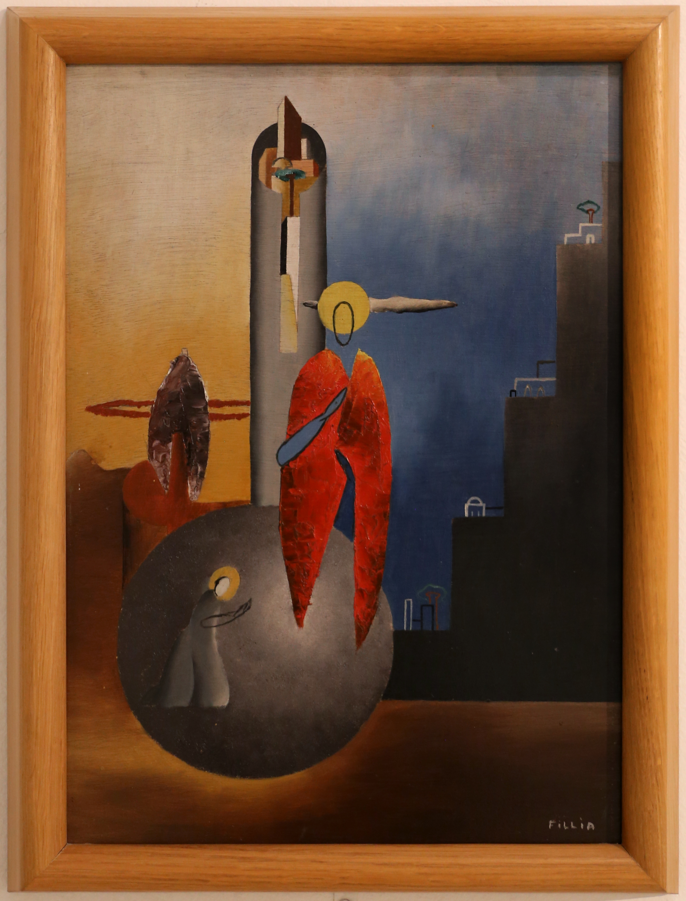
画像を拡大 ＋《神の都》
- 作者
- フィリア（ルイージ・コロンボ）
- 制作時期
- 1931〜1932年
- 所在地・所蔵
- カリアリ市立美術館（イングラオ・コレクション）
- 素材・形式
- 原題
- La città di Dio
- 動画の年代
- 1933年
出典・画像について
画像出典：Sailko / Wikimedia Commons
CC BY 3.0
作品情報：画像出典・利用条件 · 作品照合資料 · 所蔵館の作品ページ
制作メモ
赤い衣の人物、背後の細長い十字架、右奥の建物の配置を動画と照合した。
1977没原作の同一図版所在地素材と利用条件未確認。別宗教画を代用しない。
《生誕（画面表記）》
- 作者
- ジェラルド・ドットーリ
- 制作時期
- 1930年（画面表記）
- 所在地・所蔵
- 未確定
- 素材・形式
出典・画像について
活動の終わりと再評価
活動の終わりと「第二未来派」の再評価
動画 22:25～マリネッティは軍人ではないにもかかわらず、第二次世界大戦では60代後半にロシア戦線へ赴くなど、積極的に参加しました。しかし帰国後に健康を損ね、1944年に心臓発作で亡くなります。ムッソリーニも戦中に失脚し、1945年に処刑されました。指導者を失い、ファシズムへの憎しみが広がる中、集団としての未来派は事実上終わります。クラーリのように個人で活動を続ける人はいても、共同の運動は終わったのです。
戦後の美術史では、体制と関わる前、ボッチョーニらが活躍した第一次世界大戦までが主に語られました。これに異議を唱えたのが、イタリアの美術史家エンリコ・クリスポルティです。1958年に「第二未来派」という語を用い、初期に比べて過小評価されていると訴えました。
1909年から1944年まで続く歴史のうち、1918年までしか扱われてこなかったことへの、批評的な応答でした。あえて区別し、独立して評価・研究する価値があると示そうとしたのです。1961年、ニューヨーク近代美術館の未来派50周年記念展でも、第二未来派の出品を求めましたが、実際には大戦前の作品が大半だったと記録されています。それでも書籍や国内の展覧会を通じ、再評価へ大きく貢献しました。
2014年、アメリカのグッゲンハイム美術館で開催された未来派展では、公式カタログの表紙を初期作品でなく、クラーリの航空絵画が飾りました。日本ではなお認知が限られる面がありますが、当時の画家たちが探った先進的な表現は、現代の感性にも深い影響を与えています。
要点まとめ
- 初期未来派は、イタリアの工業化の遅れや過去の遺産への依存を背景に、伝統との決別と技術・速度の美を求めた。
- 複数の時間や動きを重ねる表現は、絵画に限らず彫刻、音楽、建築にも広がった。
- 第一次世界大戦と戦後の不満、社会の混乱は、未来派とファシズムの関係を考える背景となる。
- 思想の親和性や活動の後押しはあったが、未来派は政権と同じ方針に従っていたわけではない。
- 第二未来派の活動は、芸術の規範だけでなく政治や料理など生活の変革へ広がった。
- 国際交流や雑誌ノイ、デペロの商業広告や本のデザインには、多様な表現への関心が見られる。
- 1929年の航空絵画宣言以後、アエロピットゥーラは、空からの視点や飛行体験を表す重要な方向となった。
- 航空の国家的宣伝や戦争の主題と関わる一方、宗教画など別の表現も試みられた。
- 第二未来派という呼称は、戦後のクリスポルティが再評価を促すために用いた。初期だけでない歴史を見るための区分である。
確認問題
答えを考えてから開いてください。選択問題は選ぶとすぐ正誤と解説が出ます（選択肢の順番は開くたびに変わります）。各問題のリンクから該当の章や作品カードへ戻れます。
選択問題：0／4問回答・正解0
A. 一問一答答えを考えてから開く
問11909年の未来派宣言をフィガロに発表した人物は誰か。
答えを見る
問2上空の視点や飛行体験を描く航空絵画を、イタリア語で何というか。
答えを見る
問31958年に第二未来派という語を使い、再評価を訴えた美術史家は誰か。
答えを見る
B. 4択選ぶとすぐ正誤と解説
問4未来派と政権の関係として本文に合うものはどれか。
→ 本文で確認（生活へ広がる宣言と政権との距離）
問5デペロのボルト綴じ本の特徴はどれか。
→ 本文で確認（広告と本を変えるデペロ）
問6第二未来派という語の位置付けはどれか。
→ 本文で確認（活動の終わりと「第二未来派」の再評価）
C. 図版問題画像を見て答える
問7この《航空の神秘》を描いた画家は誰か。
→ 作品カードで確認
問8この作品の題名と作者を答えよ。